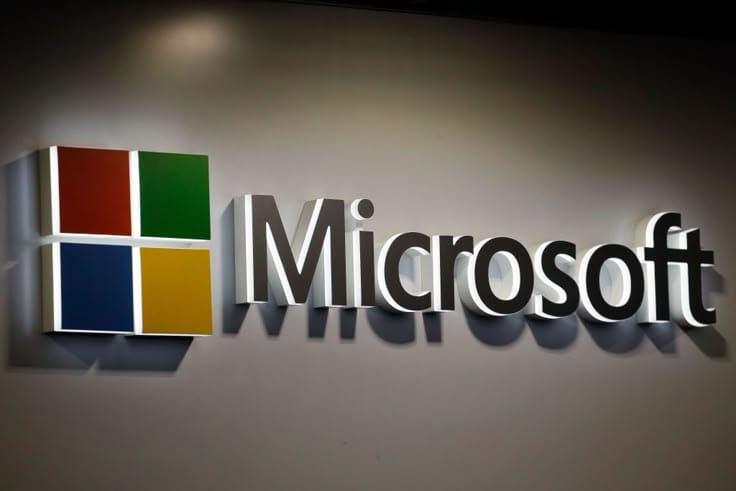
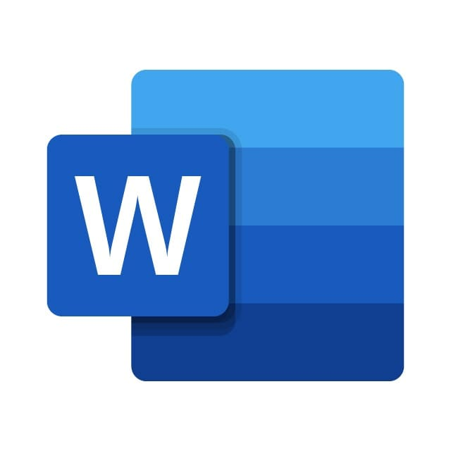
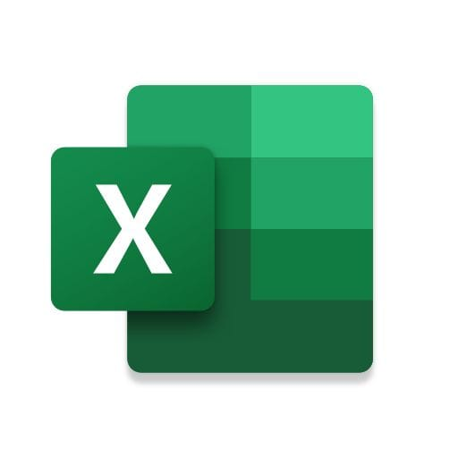
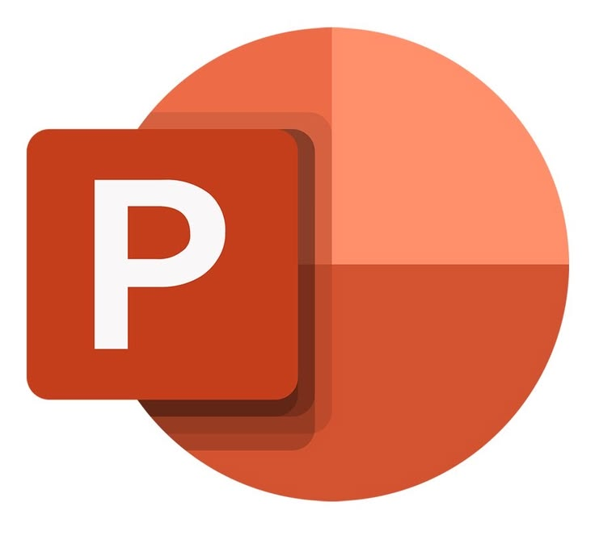

تاريخ شركة Microsoft
تأسست شركة Microsoft في 4 أبريل 1975 على يد Bill Gates (بيل جيتس) و Paul Allen (بول ألين). بدأت الشركة كفكرة لتطوير برمجيات أجهزة الكمبيوتر الشخصية، وسرعان ما أصبحت واحدة من أكبر شركات التكنولوجيا في العالم، حيث أحدثت ثورة في عالم الحوسبة الشخصية وحزم البرامج المكتوبة.
أبرز مشاريع الشركة (Microsoft Office)

1. Microsoft Word
برنامج معالجة النصوص الأشهر عالمياً، يُستخدم لإنشاء وتحرير المستندات، التقارير، والكتب بصيغ متعددة مع أدوات تنسيق احترافية.

2. Microsoft Excel
برنامج الجداول الحسابية المعتمد في تحليل البيانات، إجراء المعادلات الرياضية والمعقدة، وإنشاء الرسوم البيانية الإحصائية.

3. Microsoft PowerPoint
أداة تصميم العروض التقديمية التفاعلية، تُستخدم لتنسيق الشرائح الشارحة ودعم الاجتماعات والعروض الاحترافية.